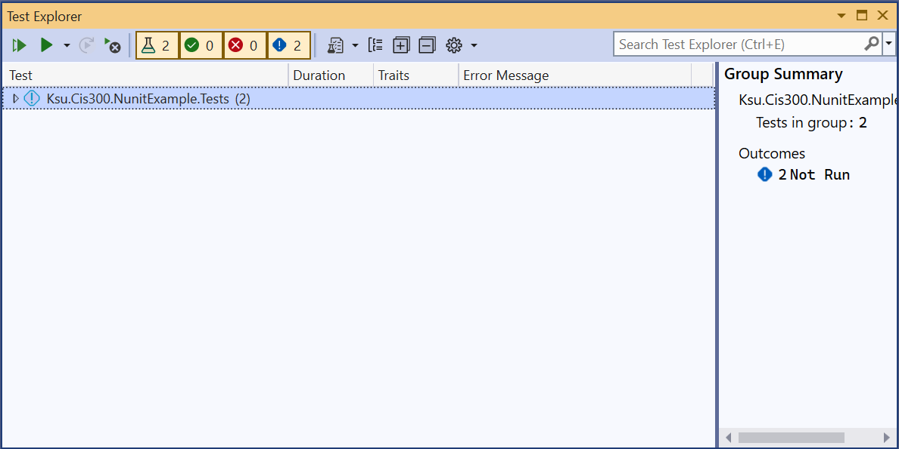
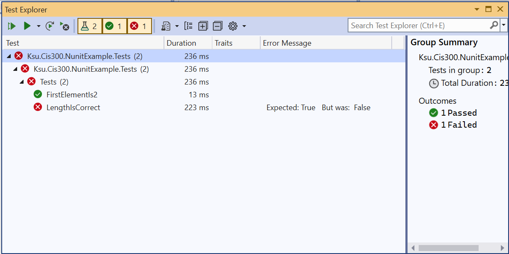
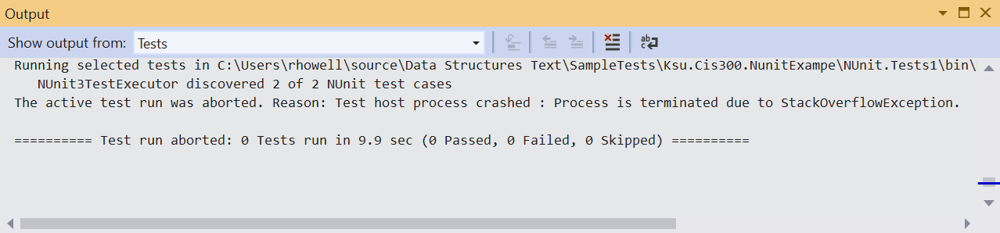

Unit Testing
Some of the lab assignments in CIS 300 use a technique called unit testing for testing the correctness of your code. Unit testing is an automated technique for testing individual public methods and properties using a pre-defined set of test cases. We will be using an open-source unit-testing framework called NUnit.
An NUnit test suite is a separate project contained within the same solution as the project it is to test. The GitHub repositories for lab assignments that utilize unit testing will initially contain these projects, whose names will typically end with “.Tests”. You should not modify these test projects.
A test project will contain one or more classes having the attribute, [TestFixture]. These classes will contain the specific tests, each of which is a method with the attribute, [Test]. The name of the method will briefly describe the test, and a more detailed explanation will be provided in comments.
To run the tests, first go to the “Test” menu and select “Test Explorer”. This will open the Test Explorer, which should resemble the following:

Depending on whether the test project has been successfully compiled, the tests in the large panel may or may not be shown.
Then click the “Run All Tests in View” button in the upper-left corner of the Test Explorer. The Test Explorer should then show the results of all the tests:

To see all of the output, you will need to open all of the elements either by clicking on the small triangles to the left of each element or by clicking the icon containing the ‘+’ symbol.
The above output shows that there were two tests in the test suite. The names of the tests are simply the names of the methods comprising the tests. The output further shows that one of the tests, LengthIsCorrect, failed, whereas the other test, FirstElementIs2, passed.
The goal, of course, is to get all the tests to pass. When a test fails, you will first want to refer to the comments on the test method in order to understand what it is testing. Then by clicking on the failed test in the Test Explorer, you can see exactly what failed in the test - this will appear in the panel on the right. In some cases, an unexpected result will have been produced. In such cases, the message will show what result was expected, and what it actually was. In other cases, an exception will have been thrown. In such cases, the exception will be displayed. A stack trace will also be displayed, so that you can tell what line of code threw the exception. Finally, you can run the debugger on the test itself by right-clicking on the test and selecting “Debug”. This will allow you to debug your code using the techniques describe in the section, “The Debugger”.
You can dock the Team Explorer into the main Visual Studio window by clicking on the small triangle in the far upper-right corner of the window and selecting either “Dock” or “Dock as Tabbed Document”.
One potential error deserves special mention. Sometimes code will throw an exception that cannot be caught by a try-catch block. By far the most common of these exceptions is the StackOverflowException. When this exception is thrown during unit testing, the test explorer will simply show some or all of the tests in gray letters. This indicates that these tests were not completed. To see why the tests were not completed, you can open the “Output” window from the “View” menu and change the drop-down menu at the top to “Tests”. This will indicate what error stopped the tests; for example, the following indicates that a StackOverflowException has occurred:

Unfortunately, when this error occurs, it’s more difficult to determine which test caused the exception. You can run the debugger on each test individually to see if it throws a StackOverflowException. In many cases, however, it is easier to examine each recursive call to make sure the call is made on a smaller problem instance.
When you believe you have fixed any errors in your code, you will usually want to run all the tests again, as fixing one error can sometimes introduce another. However, there are times, such as when some of the tests are slow, when you don’t want to run all the tests. In such cases, you can select an appropriate alternative from the “Run” drop-down at the top of the Test Explorer (i.e., from the drop-down button with the single green triangle on it). A useful option from this menu is “Run Failed Tests”. Alternatively, you can select one or more tests from the Test Explorer (use Ctrl-Click to select multiple tests), then right-click and select “Run”.
Whenever you run fewer than all the tests, the tests that were not run are dimmed in the Test Explorer to indicate that these results are not up to date. Be sure you always finish by running all the tests to make sure they all pass on the same version of your code.